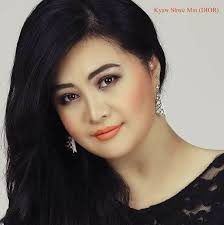

Famous Commercials actress in Myanmar(Htet Htet Moe Oo)

Htet Htet Moe Oo (born Hmone Shwe Yi on 8 May 1971) is a two-time Myanmar Academy Award winning Burmese actress, most well known as the "queen of commercials" for her prolific TV commercial appearances during the 1990s to early 2000s.